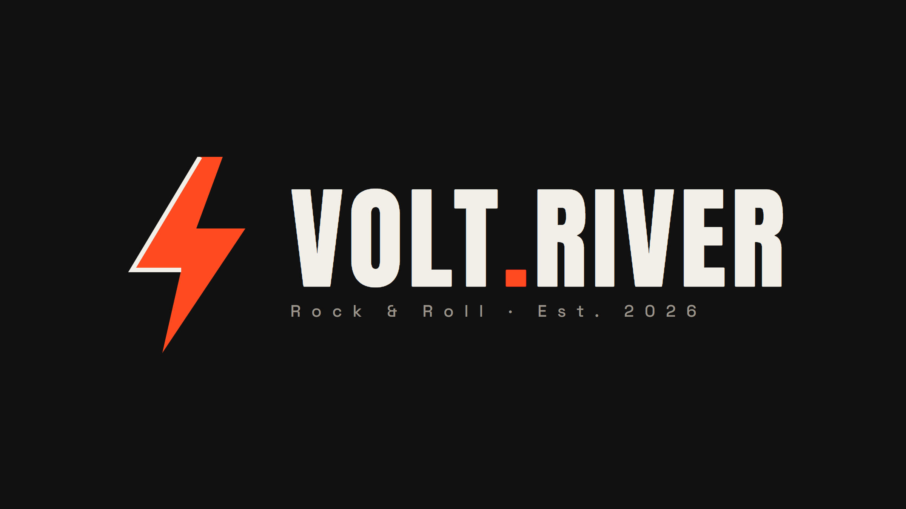
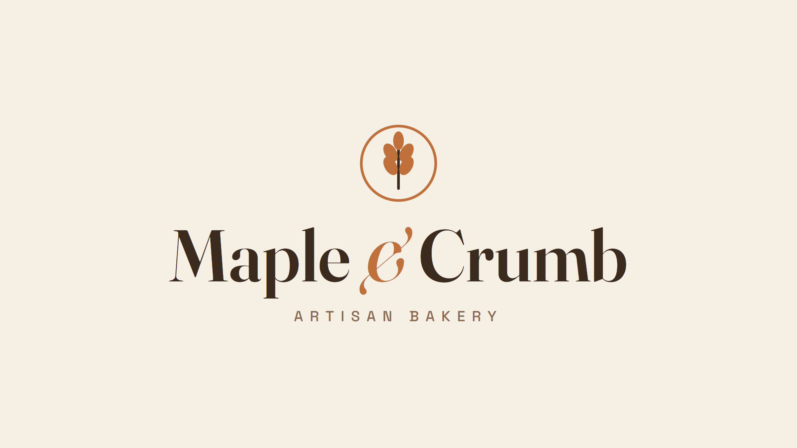
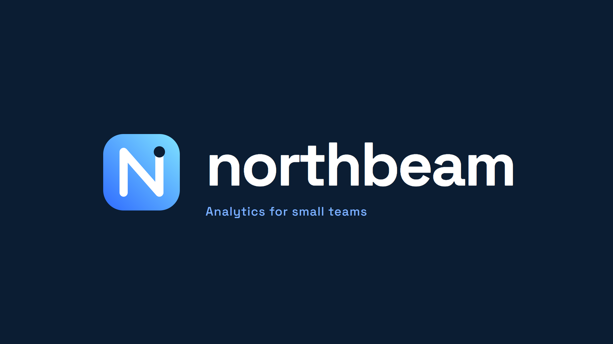
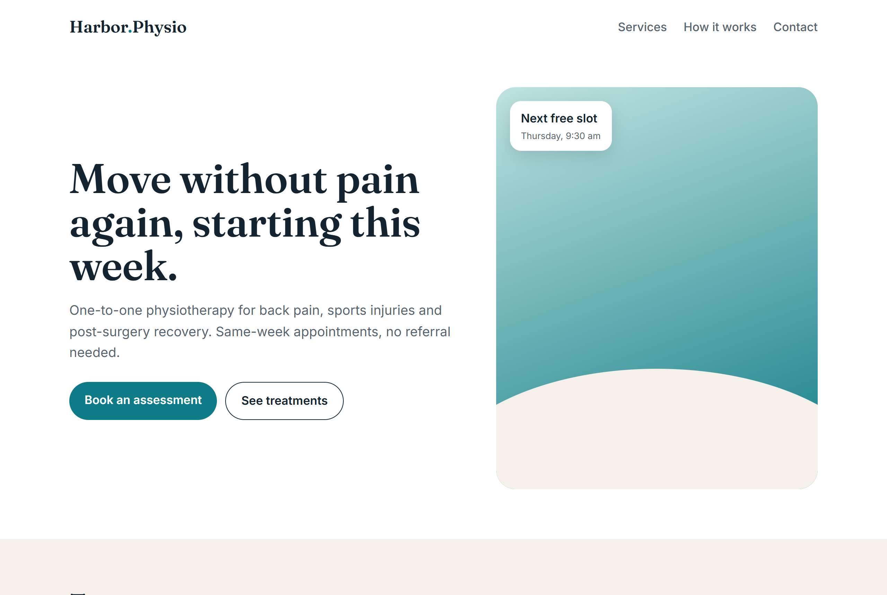
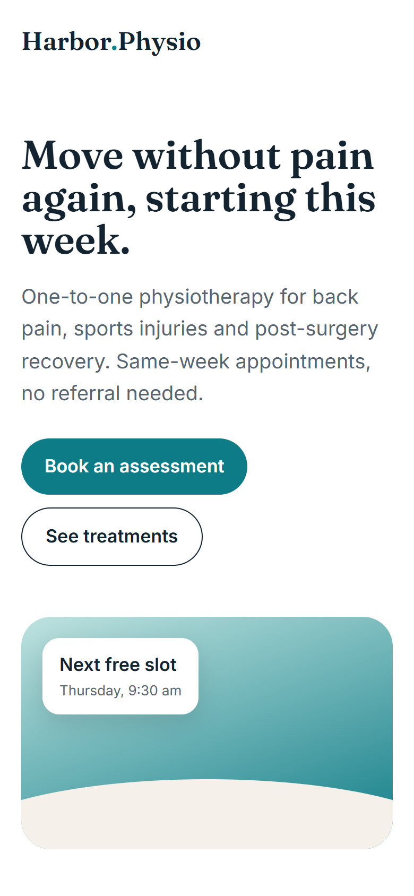

I work with small businesses, bands, creators and early-stage apps. You get a fixed price up front and a preview before you pay anything.
Launch prices for my first clients. I'm building my client base, so the prices below are reduced for the first clients only.
Three concept marks for different worlds: a rock band, a neighbourhood bakery and a software product. Each is delivered as vector SVG plus PNG on light and dark backgrounds.



A one-page site for a physiotherapy clinic: hand-coded, loads fast, works on phones, easy to host anywhere (or rebuilt in WordPress if you prefer to edit it yourself).


Opening of a documentary script about the Mary Celeste (1872), with visual cues for the editor. Every claim is sourced, and popular myths are left out on purpose.
On the afternoon of December 4th, 1872, somewhere between the Azores and the coast of Portugal, the crew of the British brigantine Dei Gratia noticed something wrong with a ship on the horizon.
She was moving, but not like a ship that anyone was steering. Her sails were set badly. She yawed off course, then back again. And when Captain David Morehouse raised his glass, he saw no one at her wheel.
When his men rowed across and climbed aboard, they found her cargo of more than seventeen hundred barrels of alcohol almost entirely intact. There was food in the stores. There was fresh water. What they did not find was a single person.
Intro and opening of Chapter 1 for a maritime history documentary (Big Old Boats application brief). About 230 words.
At a quarter past seven on the morning of November 28th, 1942, off the coast of Natal in South Africa, three torpedoes struck an ageing British liner. Within ten minutes she was gone.
Most of the people aboard were Italians: prisoners of war and civilian internees taken in East Africa, being shipped south to camps in South Africa. They had just been sunk by Germany, their own country's ally.
When the U-boat surfaced among the wreckage, her commander, Robert Gysae, pulled two men from the water to find out which ship he had hit. They were Italian.
What he did next, and what he was ordered to do, would decide who lived and who died. Of the 1,052 people aboard, 858 never came home.
This is the story of the RMS Nova Scotia.
Sixteen years earlier, she had been built for a very different ocean. Launched at Barrow-in-Furness in May 1926 for Furness, Withy & Co, Nova Scotia was a compact, practical liner: 6,796 gross tons, 406 feet long, with a quadruple-expansion steam engine good for 15 knots.
Her job was the cold, foggy run from Liverpool to St John's, Halifax and Boston, carrying mail, cargo and passengers. One of them, in the summer of 1934, was a seventeen-year-old schoolboy named Roald Dahl.
A messy contact export cleaned in one pass: duplicates merged, names split, invalid emails removed, phone numbers in international format.
| First Name | Last Name | Phone | Company | |
|---|---|---|---|---|
| John | Smith | john.smith@gmail.com | +15551234567 | Acme Corp |
| Mary | O'Neil | mary@oneil.co | +15559876543 | O'Neil Bakery |
| Anna-Marie | Dupont | +33612345678 | Dupont SARL | |
| Peter | Parker | peter@dailybugle.com | +15552223333 | Daily Bugle |
I use AI tools in my workflow to work fast, and I review and adjust every deliverable before it reaches you. If your project must be AI-free, tell me and I'll decline rather than waste your time.
To start, reply to my message on Reddit with your brief.